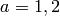
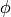
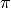
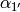
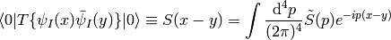

Introduction¶
The aim of these (work in progress) notes is to use the Standard Model of particle physics to derive all equations in quantum mechanics (and quantum field theory) that we need for our research.
We start by deriving the electroweak Standard Model from the symmetry and couple other (standard) assumptions in the quantum field theory. After that, we only want to derive things and make nonrelativistic limits or other approximations in order to derive everything else in quantum mechanics. In particular we show how to derive the Dirac and Schrödinger equations (as a low energy limit). We then show some particular ways to solve those equations, like perturbation theory, scattering theory, ...
The goal is to have a complete theory on about 30 or 40 pages and then lots of examples (arbitrarily long), that use the theory (but do not develop new ideas), so that one can learn how the theory works from the examples. For instance, one can ask “why is there the term in the Schrödinger equation for electromagnetic field, why this and not something else?” or “why is there the term in the Pauli equation?”, to find the answer, one just finds the Pauli equation in the theory and then looks at the derivation, so in this case one quickly finds that it follows from the minimal coupling in QED, e.g. it’s the easiest way how electron-foton interaction can be coupled, e.g. the symmetry. Nice thing about QFT is that one can find really nice geometrical reasons why things are that way and not some other way (just open any advance book on QFT), but the problem is that basically nowhere is some easy (but correct) translation of those results to regular QM, so that everything fits into just couple dozens pages, so that it can serve as a reference.
The advantage of this top-down approach is that it is easy to see where things come from and also to understand exactly what approximations one is using when dealing with any equation in QM. However, as is well-known in physics, to be a good physicist one has to understand all the approaches, e.g. both top-down and bottom-up and all other approaches to QM and QFT, because there are no two approaches that would be 100% equivalent, so one has to use the right approach for the particular problem. So these notes do not aspire to be the right way to teach QM, but rather to serve as a reference to get quickly oriented and to find the equations to start from.
Standard Model¶
Electroweak Standard Model¶
Lagrangian with a global symmetry:
where and , and
Local symmetry: This consists of two things. First changing the partial derivatives to covariant ones:
and second adding the kinetic terms
of the vector gauge particles to the lagrangian.

This breaks the gauge invariance. The are going to be added to so we can set now.
Higgs Terms¶
Plugging in the covariant derivatives and in U-gauge (symmetry breaking):

Where we put
we defined by the relation
so that the expressions simplify a bit, e.g. we now get:
Leptonic Terms¶

Where we substituted new fields and  for the old ones and using the relation:
for the old ones and using the relation:
The angle must be the same as in the Higgs sector, so that the field is the same. We now need to make the following requirement in order to proceed further:
This follows for example by requiring that neutrinos have zero charge, i.e. setting and substituting for from the definition (see the Higgs terms), from which one gets . From we now get
it now follows:
and the Lagrangian can be further simplified:
Where we used the relations and .
![-{1\over4}g^2[(A^a_\mu A^{a\mu})(A^b_\nu A^{b\nu})- (A^a_\mu A^a_\nu)(A^{b\mu} A^{b\nu})] =](../../_images/math/8a11c5d2238716648b28a8915ecad469446fc8af.png)

GWS Lagrangian¶
Plugging everything together we get the GWS Lagrangian:
The free parameters are  , ,
, ,  ,
,  , , ,
.
, , ,
.
Particle Masses¶
The particle masses are deduced from the terms
comparing to the above:
we get
Note that those are the bare masses (e.g. in order to obtain the real mesaured masses of the particles, one has to renormalize them by calculating the higher order corrections given by the loop diagrams).
Parameters of the Standard Model¶
The free parameters are , , , , then three masses of
the charged leptons , , , six quark masses and four
parameters of the CKM mixing matrix, which gives 4 + 3 + 6 + 4 = 17 free
parameters (if one allows for three neutrino masses and the corresponding four
mixings parameters, one gets 17 + 3 + 4 = 24 free parameters).
They can be traded for other physical parameters (see below), but their numerical values are not predicted by the theory, so they have to be measured and their experimental values are approximately:
All the parameters have been measured quite exactly, except .
Other physical constants can then be calculated using the formulas:
QFT¶
Field Operators¶
The free (non-interacting) fields in the interaction picture are expressed using the creation and anihilation operators below, also the corresponding non-interacting Hamiltonian is shown.
The general idea behind the machinery is that the field operator
is constructed as a sum (or
an integral, depending on if the index  is discrete or continuous) of
single-particle wave functions (i.e. solutions of the noninteracting equation
of motion) multiplied by the creation/anihilation operators ( or
) that create/destroy
the particle in the given single-particle state. Note that the noninteracting
equation of motion usually means that we set all potentials (interactions) as
zero, but in principle it can be any equation that we can solve exactly.
is discrete or continuous) of
single-particle wave functions (i.e. solutions of the noninteracting equation
of motion) multiplied by the creation/anihilation operators ( or
) that create/destroy
the particle in the given single-particle state. Note that the noninteracting
equation of motion usually means that we set all potentials (interactions) as
zero, but in principle it can be any equation that we can solve exactly.
The coefficients don’t depend on time (so neither the field
operators in the Schrödinger picture), but we work in the interaction picture,
where the creation/anihilation operators depend on time, and the time
dependence is put into the exponentials below (but the integration is still
done over the spatial components of  only).
only).
Scalar bosons:
where:
(all other commutators are equal to zero). The equal-time commutation relations for  and  are then:
(all other commutators are equal to zero).
The Hamiltonian is
Fermions:
where
(all other anticommutators are equal to zero). The equal-time anticommutation relations for and are then:
The Hamiltonian is
and the total charge:
So the -type particles and  -type particles are identical except the
charge. In QED, we identify the -type particles as electrons and the
-type particles as positrons.
-type particles are identical except the
charge. In QED, we identify the -type particles as electrons and the
-type particles as positrons.
Vector bosons:
where
The equal-time commutation relations for are then:
Calculating Scattering Amplitudes using Green Functions¶
We are interested in calculating the following scattering amplitudes:
where the initial  and final
and final  states are created by creation
operators of the fields from the previous section. For example
states are created by creation
operators of the fields from the previous section. For example
Depending on the particular creation and anihilation operators, it can be shown that they can be replaced by:
![a^\dag_{\bf k}\,{}_\text{in} \to
i\int\d^4 x e^{ikx}\left(\partial^2+m^2\right)\phi(x)
={k^2-m^2\over i}\tilde\phi(-k)
={1\over\tilde D(k)}\tilde\phi(-k)
a_{\bf k}\,{}_\text{out} \to
i\int\d^4 x e^{-ikx}\left(\partial^2+m^2\right)\phi(x)
={k^2-m^2\over i}\tilde\phi(k)
={1\over\tilde D(k)}\tilde\phi(k)
b^{s\dag}_{\bf k}\,{}_\text{in} \to
i\int\d^4 x\bar\psi(x) \left(i\overleftarrow{\fslash\partial}+m\right)u^s({\bf k})e^{ikx}
=\tilde{\bar\psi}(-k){-\fslash k - m\over i}u^s({\bf k})
=\tilde{\bar\psi}(-k){1\over\tilde S(-k)}u^s({\bf k})
b^s_{\bf k}\,{}_\text{out} \to
i\int\d^4 x e^{-ikx}\bar u^s({\bf k})\left(-i\fslash\partial+m\right)\psi(x)
=\bar u^s({\bf k}){\fslash k - m\over i}\psi(k)
=\bar u^s({\bf k}){1\over\tilde S(k)}\psi(k)
d^{s\dag}_{\bf k}\,{}_\text{in} \to
-i\int\d^4 x e^{ikx}\bar v^s({\bf k})\left(-i\fslash\partial+m\right)\psi(x)
=-\bar v^s({\bf k}){\fslash k - m\over i}\psi(-k)
=-\bar v^s({\bf k}){1\over\tilde S(k)}\psi(-k)
d^s_{\bf k}\,{}_\text{out} \to
-i\int\d^4 x\bar\psi(x) \left(i\overleftarrow{\fslash\partial}+m\right)v^s({\bf k})e^{-ikx}
=-\tilde{\bar\psi}(k){-\fslash k - m\over i}v^s({\bf k})
=-\tilde{\bar\psi}(k){1\over\tilde S(-k)}v^s({\bf k})
a^{r\dag}_{\bf k}\,{}_\text{in} \to
i\epsilon_\mu^{r*}({\bf k})
\int\d^4 x e^{ikx} \partial^2 A^\mu(x)
=
\epsilon_\mu^{r*}({\bf k}){k^2\over i}
\tilde A^\mu(-k)
a^r_{\bf k}\,{}_\text{out} \to
i\epsilon_\mu^r({\bf k})
\int\d^4 x e^{-ikx} \partial^2 A^\mu(x)
=
\epsilon_\mu^r({\bf k}){k^2\over i}
\tilde A^\mu(k)](../../_images/math/f028bd555933e8179d4aed798d456a9c2b2c06ec.png)
where the “in” is the operator for and “out” for . The fields , , and have to be time ordered. On the left hand side is a position space representation, the two expressions on the right hand side are the momentum representation (the last expression is written using the propagators), e.g. a Fourier transform, which is essentially just the following substitutions:
both representations are of course equivalent (but the momentum one is easier to use, since the formulas are shorter).
For our example we get in the position space:
![\braket{f|i} = \braket{\Omega|
b_{{\bf p}_{2'}}
b_{{\bf p}_{1'}}
b_{{\bf p}_{1}}^\dag
b_{{\bf p}_{2}}^\dag
|\Omega}
= \braket{\Omega|T\,
b_{{\bf p}_{2'}}
b_{{\bf p}_{1'}}
b_{{\bf p}_{1}}^\dag
b_{{\bf p}_{2}}^\dag
|\Omega}=
= i^4 \int \d^4 x_1\d^4 x_2\d^4 x_{1'}\d^4 x_{2'}
e^{-ip_{1'}x_{1'}}\left[\bar u^{s_{1'}}({\bf k}_{1'})
\left(-i\fslash\partial_{1'} +m\right)\right]_{\alpha_{1'}}
e^{-ip_{2'}x_{2'}}\left[\bar u^{s_{2'}}({\bf k}_{2'})
\left(-i\fslash\partial_{2'} +m\right)\right]_{\alpha_{2'}}
\braket{\Omega|T\,
\psi_{\alpha_{2'}}(x_{2'})
\psi_{\alpha_{1'}}(x_{1'})
\bar\psi_{\alpha_1}(x_1)
\bar\psi_{\alpha_2}(x_2)
|\Omega}
\left[\left(i\overleftarrow{\fslash\partial_1}+m\right)
u^{s_1}({\bf p}_1)\right]_{\alpha_1} \,e^{ip_1x_1}
\left[\left(i\overleftarrow{\fslash\partial_2}+m\right)
u^{s_2}({\bf p}_2)\right]_{\alpha_2} \,e^{ip_2x_2}](../../_images/math/6ac8c5747d5073546fcb64cc9fe39e996f27a8ac.png)
where the , ,  and  spinor
indices were introduced to show how the matrices should be multiplied.
The vacuum amplitude is called a 4 point interacting Green function in position
space:
spinor
indices were introduced to show how the matrices should be multiplied.
The vacuum amplitude is called a 4 point interacting Green function in position
space:
we can also take a Fourier transform to get the Green function in momentum space:

then the scattering amplitude becomes (resuming the previous calculation):
We can get the same result much faster if we use the momentum space from the beginning:
![\braket{f|i} = \braket{\Omega|
b_{{\bf p}_{2'}}
b_{{\bf p}_{1'}}
b_{{\bf p}_{1}}^\dag
b_{{\bf p}_{2}}^\dag
|\Omega}
= \braket{\Omega|T\,
b_{{\bf p}_{2'}}
b_{{\bf p}_{1'}}
b_{{\bf p}_{1}}^\dag
b_{{\bf p}_{2}}^\dag
|\Omega}=
= \braket{\Omega|T\,
\bar u^{s_{2'}}({\bf p}_{2'}){1\over\tilde S({\bf p}_{2'})}
\tilde\psi({\bf p}_{2'})
\bar u^{s_{1'}}({\bf p}_{1'}){1\over\tilde S({\bf p}_{1'})}
\tilde\psi({\bf p}_{1'})
\tilde{\bar\psi}(-{\bf p}_1){1\over\tilde S(-{\bf p}_1)}
u^{s_1}({\bf p}_1)
\tilde{\bar\psi}(-{\bf p}_2){1\over\tilde S(-{\bf p}_2)}
u^{s_2}({\bf p}_2)
|\Omega}=
=
\left[\bar u^{s_{2'}}({\bf p}_{2'}){1\over\tilde S({\bf p}_{2'})}
\right]_{\alpha_{2'}}
\left[\bar u^{s_{1'}}({\bf p}_{1'}){1\over\tilde S({\bf p}_{1'})}
\right]_{\alpha_{1'}}
\braket{\Omega|T\,
\tilde\psi_{\alpha_{2'}}({\bf p}_{2'})
\tilde\psi_{\alpha_{1'}}({\bf p}_{1'})
\tilde{\bar\psi}_{\alpha_1}(-{\bf p}_1)
\tilde{\bar\psi}_{\alpha_2}(-{\bf p}_2)
|\Omega}
\left[{1\over\tilde S(-{\bf p}_1)} u^{s_1}({\bf p}_1)
\right]_{\alpha_1}
\left[{1\over\tilde S(-{\bf p}_2)} u^{s_2}({\bf p}_2)
\right]_{\alpha_1}](../../_images/math/fce23a06d84f4e289de0e2a963a6196541dc0d23.png)
This is called Lehmann-Symanzik-Zimmermann (LSZ) reduction formula. One obtains similar expressions for other fields as well (if there were different creation operators between the initial and final states). All that remains is to calculate the interacting Green functions (for which we need to know the interaction Lagrangian). But first couple more examples:
Example 1¶
-  elastic scattering:
elastic scattering:
So the initial and final states are:
and we get:
![\braket{f|i} = \braket{\Omega|
b_{{\bf p'}}
b_{{\bf k'}}
b_{{\bf k}}^\dag
b_{{\bf p}}^\dag
|\Omega}
=\braket{\Omega|T\,
b_{\bf p'}
b_{\bf k'}
b_{\bf k}^\dag
b_{\bf p}^\dag
|\Omega}=
=
\left[\bar u({\bf p'}){1\over\tilde S({\bf p'})}
\right]
\left[\bar u({\bf k'}){1\over\tilde S({\bf k'})}
\right]
\braket{\Omega|T\,
\tilde\psi({\bf p'})
\tilde\psi({\bf k'})
\tilde{\bar\psi}(-{\bf k})
\tilde{\bar\psi}(-{\bf p})
|\Omega}
\left[{1\over\tilde S(-{\bf k})} u({\bf k})
\right]
\left[{1\over\tilde S(-{\bf p})} u({\bf p})
\right]](../../_images/math/a458de65ed07b9abd7d9361e5d0f50584a514b4c.png)
We only multiply the matrices with the same momentum, i.e. with , with and so on. Also we don’t write the spin anymore, e.g. should in fact be and so on.

![\braket{f|i}=
\braket{\Omega|
b^r_{{\bf k}_1}
d^s_{{\bf k}_2}
b^{t\dag}_{{\bf p}_1}
d^{u\dag}_{{\bf p}_2}
|\Omega} =
=\braket{\Omega|T
b^r_{{\bf k}_1}
d^s_{{\bf k}_2}
b^{t\dag}_{{\bf p}_1}
d^{u\dag}_{{\bf p}_2}
|\Omega} =
=\braket{\Omega|T
\left[\bar u^r({\bf k}_1){1\over\tilde S(k_1)}\tilde \psi(k_1)\right]
\left[-\tilde{\bar\psi}(k_2){1\over\tilde S(-k_2)}v^s({\bf k}_2)\right]
\left[\tilde{\bar\psi}(-p_1){1\over\tilde S(-p_1)}u^t({\bf p}_1)\right]
\left[-\bar v^u({\bf p}_2){1\over\tilde S(p_2)}\tilde \psi(-p_2)\right]
|\Omega} =
=
\left[\bar u^r({\bf k}_1){1\over\tilde S(k_1)}\right]
\left[\bar v^u({\bf p}_2){1\over\tilde S(p_2)}\right]
\braket{\Omega|T
\tilde \psi(k_1)
\tilde{\bar\psi}(k_2)
\tilde{\bar\psi}(-p_1)
\tilde \psi(-p_2)
|\Omega}
\left[{1\over\tilde S(-k_2)}v^s({\bf k}_2)\right]
\left[{1\over\tilde S(-p_1)}u^t({\bf p}_1)\right]](../../_images/math/48b28a30e94c56e7eaa6b077be20ef85c041cc20.png)


Evaluation of the Interacting Green Functions¶
The interacting Green functions can be evaluated using the formula:
where
is a field in the Heisenberg picture () and is a field in the interaction picture (), where the Hamiltonian is and the vacua (ground states) are and .
This can be proven by evaluating the right hand side:
![{\braket{0|T\, \phi_I(x_1) \dots \phi_I(x_n) S|0}\over
\braket{0|S|0}}
=
{\braket{0|T\, \phi_I(x_1) \dots \phi_I(x_n) U_I(\infty, -\infty)|0}\over
\braket{0|U_I(\infty, 0)U_I(0, -\infty)|0}}
=
{\braket{0|U_I(\infty, t_1) \phi_I(x_1) U_I(t_1, t_2) \dots
U_I(t_{n-1}, t_n)\phi_I(x_n) U_I(t_n, -\infty)|0}\over
\braket{0|U_I(\infty, 0)U_I(0, -\infty)|0}}
=
{\braket{0|U_I(\infty, 0) \phi_H(x_1) \dots \phi_H(x_n) U_I(0, -\infty)|0}\over
\braket{0|U_I(\infty, 0)U_I(0, -\infty)|0}}=
=
{\braket{0|\Omega}\braket{\Omega|T \phi_H(x_1) \dots \phi_H(x_n)
|\Omega}\braket{\Omega|0}\over
\braket{0|\Omega}\braket{\Omega|\Omega}\braket{\Omega|0}}=
=
{\braket{\Omega|T \phi_H(x_1) \dots \phi_H(x_n) |\Omega}\over
\braket{\Omega|\Omega}}=
=
\braket{\Omega|T \phi_H(x_1) \dots \phi_H(x_n) |\Omega}](../../_images/math/dcc9f9027a6fe3fa6294c9c164ea6f1bd7c3cf18.png)
where we used the following relations:
Evolution Operator, S-Matrix Elements¶
The evolution operator  is defined by the equations:
is defined by the equations:
We are interested in calculating the S matrix elements:
so we first calculate . Integrating the equation for the evolution operator:
Now:

If  doesn’t contain derivatives of the fields, then so:
doesn’t contain derivatives of the fields, then so:
Let’s write  and , . As a first step now, let’s investigate a scalar field, e.g. (e.g. a Higgs self interaction term above), we’ll look at other fields later:
and , . As a first step now, let’s investigate a scalar field, e.g. (e.g. a Higgs self interaction term above), we’ll look at other fields later:
where
This is called the LSZ formula. Now we use the Wick contraction, get some terms like integrate things out, this will give the delta function and ‘s and that’s it.
Let’s see how it goes for for the process :
The denominator cancels with the disconnected terms. We used the Wick contractions (see below for a thorough explanation+derivation):
Where the “disconnected” terms are and similar. When they are integrated over, they do not generate enough propagators to cancel the propagators from the LSZ formula, which will cause the terms to vanish.
For the theory, one also needs the following contractions:
Thus it is clear that the only difference from the above is the factor which after integrating changes to and this ends up in the final result.
One always gets the delta function in the result, so we define the matrix element by:
Propagators for Scalar Bosons, Fermions and Vector Bosons¶
The only nonzero contractions that can occur are the propagators below. All other contractions are zero.
Propagator for a scalar boson is:
with
For fermions (Feynman propagator):

with
For vector bosons:
with
For massless bosons:
Wick Theorem¶
As seen above, we need to be able to calculate
The Wick theorem says, that this is equal to all possible contractions of fields (all fields need to be contracted), where a contraction is defined as:
with
A few lowest possibilities:

For the last two equations, not all possibilities of the connected graphs are listed (and also the combinatorial factor is omitted).
Nonrelativistic Field Operators¶
One difference in nonrelativistic quantum mechanics is that the noninteracting solutions to the equation of motion (Schrödinger equation in this case) can be numbered using a discrete index, so for example the momentum is not continuous, thus the (anti)commutation relations for creation and anihilation operators contain the Kronecker delta (instead of a delta function) and integrals over the index are replaced by sums. The reason for that is that we usually employ boundary conditions (like a lattice, or one particle potential due to nuclei, etc.) that make the spectrum discrete.
For bosons the field operators are given by:
where the coefficients are the single-particle wave functions.
so the commutation relations for and are:
![[\hat\psi({\bf x}), \hat\psi^\dag({\bf y})] = \delta^{(3)}({\bf x}-{\bf y})
[\hat\psi({\bf x}), \hat\psi({\bf y})] =
[\hat\psi^\dag({\bf x}), \hat\psi^\dag({\bf y})] = 0](../../_images/math/18e58d6b17c6a16e8c849f86e0e90deb4f1dcfc1.png)
For fermions:
where
so the commutation relations for and are:

The (interacting) Hamiltonian for both bosons and fermions is
Note the ordering of the final two destruction operators , which is opposite that of the last two single-particle wave functions in the matrix elements of the potential (for bosons it doesn’t matter, for fermions it changes a sign).
Nonrelativistic Propagator¶
Nonrelativistic limits of the propagators are obtained by assuming (we substitute ):
the behavior of the propagator in the vicinity of its positive frequency pole is (remember in the nonrelativistic limit):
Similarly for fermions:
(1)
The first term
selects the two upper components of a given bispinor. The second term
mixes the upper and lower components of the bispinor and the contribution of this term is quadratic in so it can be neglected. The numerator of (1) reduces to a unit matrix (in spin space):
where is the nonrelativistic retarded propagator defined by:
(For the other pole , we define and we would see that the antiparticles’ propagator reduces to the advanced Green’s function in the nonrelativistic limit.)
As shown above, the nonrelativistic free propagator is defined by:
with:
If we use the energies of the nonineracting particles , we can write it as:
so
using we can also write:
Other equivalent ways of representing the propagator:
Sometimes it’s useful to calculate the mixed representation :
(The “” means to use the Residue Theorem and distinguish two cases and , thus getting the Heaviside step function in the result.)
Very often, in practice, one just needs to work with and , here is how to convert between those:
The relation to the contraction of operators is:
where is the ground state wavefunction and:
so to understand the meaning of , we write it as:
which describes the probability amplitude of adding a bare particle at time , removing at time and regaining the original many-body system (that in the meantime evolved into ).
Evaluating the Interacting Green Functions¶
The Green functions below can either be evaluated using the Wick theorem, or using Feynman diagrams and the corresponding Feynman rules.
![\braket{\Omega|T\tilde A^\alpha(r) \tilde A^\beta(p)
\tilde{\bar\psi}(-k)\tilde{\psi}(-l)
|\Omega}
=
=\int \d^4x\,\d^4 y
\bra{0}T\tilde A^\alpha(r) \tilde A^\beta(p)
\tilde{\bar\psi}(-k)\tilde{\psi}(-l)
i{g\over 2 \sqrt 2}\bar\nu_e(x) \gamma^\mu (1-\gamma_5) e(x) W_\mu^+(x)
i{g\over 2 \sqrt 2}\bar\nu_e(y) \gamma^\nu (1-\gamma_5) e(y) W_\nu^+(y)
\ket{0}
=
=\left(i{g\over 2 \sqrt 2}\right)^2
\int \d^4x\,\d^4 y \,\d\hat r\,\d\hat p\,\d\hat k\,\d\hat l\,
e^{i(\hat rr + \hat pp - \hat kk - \hat ll)}
\bra{0}T A^\alpha(\hat r) A^\beta(\hat p)
{\bar\psi}(\hat k){\psi}(\hat l)
\bar\nu_e(x) \gamma^\mu (1-\gamma_5) e(x) W_\mu^+(x)
\bar\nu_e(y) \gamma^\nu (1-\gamma_5) e(y) W_\nu^+(y)
\ket{0}
=
=\left(i{g\over 2 \sqrt 2}\right)^2
\int \d^4x\,\d^4 y \,\d\hat r\,\d\hat p\,\d\hat k\,\d\hat l\,
e^{i(\hat rr + \hat pp - \hat kk - \hat ll)}
D^\alpha{}_\mu(\hat r - x) D^\mu{}_\nu(\hat p - y)
S(\hat l - x) \gamma^\mu (1-\gamma_5)S(x-y)\gamma^\nu(1-\gamma_5)
S(\hat k - y)
=
=\left(i{g\over 2 \sqrt 2}\right)^2
\int \d^4x\,\d^4 y \,\d\hat r\,\d\hat p\,\d\hat k\,\d\hat l\,
e^{i((\hat r+x)r + (\hat p+y)p - (\hat k+y)k - (\hat l+x)l)}
D^\alpha{}_\mu(\hat r) D^\mu{}_\nu(\hat p)
S(\hat l) \gamma^\mu (1-\gamma_5)S(x-y)\gamma^\nu(1-\gamma_5)
S(\hat k)
=
=\left(i{g\over 2 \sqrt 2}\right)^2
\int \d^4x\,\d^4 y \,
e^{i(xr + yp - yk - xl)}
\tilde D^\alpha{}_\mu(r) \tilde D^\mu{}_\nu(p)
\tilde S(l) \gamma^\mu (1-\gamma_5)S(x-y)\gamma^\nu(1-\gamma_5)
\tilde S(k)
=
=\left(i{g\over 2 \sqrt 2}\right)^2
\int \d^4x\,\d^4 y \,
e^{i((x+y)r + yp - yk - (x+y)l)}
\tilde D^\alpha{}_\mu(r) \tilde D^\mu{}_\nu(p)
\tilde S(l) \gamma^\mu (1-\gamma_5)S(x)\gamma^\nu(1-\gamma_5)
\tilde S(k)
=
=\left(i{g\over 2 \sqrt 2}\right)^2
\int \d^4 y \,
e^{i(yr + yp - yk - yl)}
\tilde D^\alpha{}_\mu(r) \tilde D^\mu{}_\nu(p)
\tilde S(l) \gamma^\mu (1-\gamma_5)\tilde S(r-l)\gamma^\nu(1-\gamma_5)
\tilde S(k)
=
= \left(i{g\over 2 \sqrt 2}\right)^2
(2\pi)^4\delta(r+p-k-l)
\tilde D^\alpha{}_\mu(r) \tilde D^\beta{}_\nu(p)\tilde S(l)
\gamma^\mu(1-\gamma_5) \tilde S(r-l) \gamma^\nu(1-\gamma_5)\tilde S(k)](../../_images/math/b0fc7d49ec7fd9027fbb443f24d94a4431163db4.png)
ZZH interaction¶
Let’s calculate the  interaction in the SM,
where . Consider :
interaction in the SM,
where . Consider :
![\braket{f|S|i}= \braket{f|iT|i}= \braket{k l|iT|p}=
\braket{\Omega|a^r_{\bf k} a^s_{\bf l} a^\dag_{\bf p}|\Omega} =
\braket{\Omega|T a^r_{\bf k} a^s_{\bf l} a^\dag_{\bf p}|\Omega} =
=
\braket{\Omega|T
\epsilon^{r*}_\mu({\bf k}){k^2\over i} \tilde A^\mu(k)
\epsilon^{s*}_\nu({\bf l}){l^2\over i} \tilde A^\nu(l)
{1\over\tilde D(p)}\tilde\phi(-p)
|\Omega} =
= {\epsilon^{r*}_\mu({\bf k})\epsilon^{s*}_\nu({\bf l})
\over {i\over k^2}{i\over l^2}\tilde D(p)}
\braket{\Omega|T \tilde A^\mu(k)\tilde A^\nu(l)\tilde \phi(-p)|\Omega}
= {\epsilon^{r*}_\mu({\bf k})\epsilon^{s*}_\nu({\bf l})
\over {i\over k^2}{i\over l^2}\tilde D(p)}
i\lambda (2\pi)^4 \delta(k+l-p) \tilde D^\mu{}_\alpha(k)
\tilde D^{\nu\alpha}(l)\tilde D(p)
= {\epsilon^{r*}_\mu({\bf k})\epsilon^{s*}_\nu({\bf l})
\over {i\over k^2}{i\over l^2}\tilde D(p)}
i\lambda (2\pi)^4 \delta(k+l-p)
{-ig^\mu{}_\alpha\over k^2}
{-ig^{\nu\alpha}\over l^2}
\tilde D(p)
= \epsilon^{r*}_\mu({\bf k})\epsilon^{s*}_\nu({\bf l})
i\lambda (2\pi)^4 \delta(k+l-p)
g^\mu{}_\alpha
g^{\nu\alpha}
= \epsilon^{r*}_\mu({\bf k})\epsilon^{s*}_\nu({\bf l})
i\lambda (2\pi)^4 \delta(k+l-p) g^{\mu\nu}
= i\lambda (2\pi)^4 \delta(k+l-p)
\epsilon^{r*}_\mu({\bf k})\epsilon^{s\mu*}({\bf l})](../../_images/math/baccd7c5d885acf16e7fb4df8460b9b594b58a66.png)
where we used the fact, that the first order contribution of the interaction to the interacting Green function is:
eeH interaction¶
This is only approximate, it will be fixed soon.
Let’s calculate the interaction in the SM, where . Consider :


where we used the fact, that the only nonzero element of the Green function is
ee gamma interaction¶
This is only approximate, it will be fixed soon.
Let’s calculate the interaction in the SM, where . Consider :
where we used the fact, that the only nonzero element of the Green function is
eeee interaction¶
Let’s calculate the interaction in the SM, where . Consider :
![\braket{f|S|i}= \braket{f|iT|i}= \braket{k_1 k_2|iT|p_1p_2}=
\braket{\Omega|
b^r_{{\bf k}_1}
d^s_{{\bf k}_2}
b^{t\dag}_{{\bf p}_1}
d^{u\dag}_{{\bf p}_2}
|\Omega} =
=\braket{\Omega|T
b^r_{{\bf k}_1}
d^s_{{\bf k}_2}
b^{t\dag}_{{\bf p}_1}
d^{u\dag}_{{\bf p}_2}
|\Omega} =
=\braket{\Omega|T
\left[\bar u^r({\bf k}_1){1\over\tilde S(k_1)}\tilde \psi(k_1)\right]
\left[-\tilde{\bar\psi}(k_2){1\over\tilde S(-k_2)}v^s({\bf k}_2)\right]
\left[\tilde{\bar\psi}(-p_1){1\over\tilde S(-p_1)}u^t({\bf p}_1)\right]
\left[-\bar v^u({\bf p}_2){1\over\tilde S(p_2)}\tilde \psi(-p_2)\right]
|\Omega} =
=
\left[\bar u^r({\bf k}_1){1\over\tilde S(k_1)}\right]
\left[\bar v^u({\bf p}_2){1\over\tilde S(p_2)}\right]
\braket{\Omega|T
\tilde \psi(k_1)
\tilde{\bar\psi}(k_2)
\tilde{\bar\psi}(-p_1)
\tilde \psi(-p_2)
|\Omega}
\left[{1\over\tilde S(-k_2)}v^s({\bf k}_2)\right]
\left[{1\over\tilde S(-p_1)}u^t({\bf p}_1)\right]
=
=
\left[\bar u^r({\bf k}_1){1\over\tilde S(k_1)}\right]
\left[\bar v^u({\bf p}_2){1\over\tilde S(p_2)}\right]
(-i\lambda)^2(2\pi)^4\delta(k_1+k_2-p_1-p_2)\left[
\tilde S(k_1)\gamma^\mu\tilde S(-k_2)
D_{\mu\nu}(k_1+k_2)
\tilde S(p_2)\gamma^\nu\tilde S(-p_1)
+\right.
\left. +
\tilde S(k_1)\gamma^\mu\tilde S(-p_1)
D_{\mu\nu}(k_1-p_1)
\tilde S(p_2)\gamma^\nu\tilde S(-k_2)\right]
\left[{1\over\tilde S(-k_2)}v^s({\bf k}_2)\right]
\left[{1\over\tilde S(-p_1)}u^t({\bf p}_1)\right]
=
=
-\lambda^2(2\pi)^4\delta(k_1+k_2-p_1-p_2)\left[
\bar u^r({\bf k}_1)\gamma^\mu v^s({\bf k}_2)
{1\over (k_1+k_2)^2}
\bar v^u({\bf p}_2)\gamma_\mu u^t({\bf p}_1)
+\right.
\left. +
\bar u^r({\bf k}_1)\gamma^\mu u^t({\bf p}_1)
{1\over (k_1-p_1)^2}
\bar v^u({\bf p}_2)\gamma_\mu v^s({\bf k}_2)
\right]](../../_images/math/c79b2064f3a4f6171bcbab6686c226bb75740cd5.png)
where we used the fact, that the interacting Green function is in the lowest nonzero order equal to:
Low energy theories¶
Fermi-type theory¶
This is a low energy () model for the EW interactions, that can be derived for example from the muon decay:
From the SM the relevant Lagrangian is
and one gets the diagram and the corresponding matrix element:
which when the momentum transfer  is much less than becomes
is much less than becomes
but this matrix element can be derived directly from the Lagrangian:
with
This is the universal V-A theory Lagrangian (after adding the h.c. term). Note that the Fermi constant is equal to .
For the beta decay we get:
where , is the Cabibbo
angle and  .
.